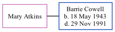

Mary Atkins, the wife of Barrie Ernest Cowell (the cousin on the mother's side of Nigel Horne), and married Barrie in Romford, Essex, England around Nov 19631.
Citations
England & Wales Marriages 1837-2005 - Findmypast
Family Tree

Generated by ged2site. Last updated on Nov 13, 2024